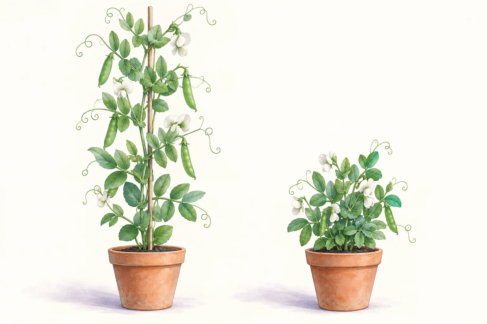

單性狀遺傳與龐氏方格

選擇親代基因型，按「完成雜交」觀察子代理論比例
×
每格代表兩個配子隨機結合的一種等可能結果。
親代配子—每個配子帶一個等位基因
純合顯性—基因型
異合—基因型
純合隱性—基因型
顯性表現型—至少一個顯性等位基因
隱性表現型—需兩個隱性等位基因
從親代到子代：先拆開，再組合
完成一次雜交後，這裡會依親代配子、四格結果與顯隱性關係解釋理論比例。
01讀親代基因型
02各取一個等位基因
03列出可能配子
04配子隨機結合
05統計子代比例
基因型不等於表現型
純合顯性與異合的基因型不同，但在完全顯性模型中都表現顯性性狀。
隱性性狀需要兩個隱性基因
子代必須各從兩個親代得到一個隱性等位基因，才會形成純合隱性並表現隱性性狀。
理論比例不是小家庭保證
每個子代都是一次新的隨機事件。子代數少時偏差可能很大，抽樣愈多通常才愈接近理論值。
目前計算： 等待完成雜交
教師模式：先問配子，不先背 3：1
建議讓學生先把每個親代「能產生哪些配子」寫出來，再畫方格。`異合 × 異合` 才會出現 1：2：1 與 3：1；換成測交或純合親代，比例立即改變。抽樣時先做 4 個子代，再做 1000 個，討論為何 4 個不一定剛好有 1 個隱性。
模型範圍：本頁只處理單一基因座、兩個等位基因、完全顯性、配子機率相等且受精機會相同的簡化模型。不適用於不完全顯性、共顯性、性聯遺傳、致死基因、基因連鎖、多基因遺傳或環境影響明顯的性狀。
抽樣子代：理論機率會不會每次剛好出現？
選擇子代數量後重新抽樣。紫色柱是理論比例，橙色柱是這一次抽樣的觀察比例。
先完成親代雜交龐氏方格建立後才能依理論機率抽樣。
顯性觀察值—
隱性觀察值—
與理論最大差距—
引導任務
建議順序先完成理論雜交，再抽樣 4 個與 1000 個子代，比較哪一組通常更接近理論比例。
模擬紀錄
每完成一次抽樣即可加入表格。資料只存在這台裝置。
| # | 性狀 | 親代 | 子代數 | 理論基因型 | 理論表現型 | 觀察基因型 | 觀察表現型 | 最大差距 |
|---|---|---|---|---|---|---|---|---|
| 尚無紀錄。先完成雜交與一次子代抽樣。 | ||||||||
學習檢核
選完三題後一次檢查；答錯時會指出應回去觀察的線索。